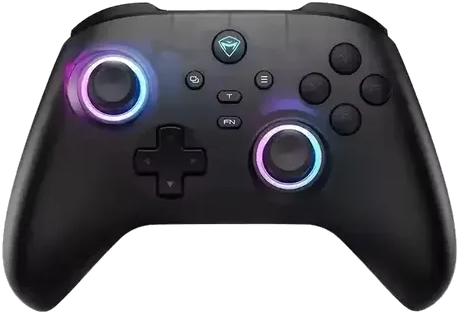

Especificações
Conectividade, sensores, bateria, app e dimensões físicas do controle.
Combinações de botões
Ligar/desligar, pareamento, turbo, botões traseiros e vibração.
Firmware & Keylinker
Como instalar o app, atualizar firmware e links oficiais.
data.js devem ser preenchidos com base no seu manual
impresso, na etiqueta do controle ou no app Keylinker.
Ficha Técnica
Especificações organizadas por bloco. Valores marcados como a confirmar ainda não foram encontrados em fonte oficial — edite em data.js.
Atalhos & Combinações
Foto real do seu G3 V2 com os pontos de referência marcados. Passe o mouse (ou toque) em cada marcador pra destacar a descrição — ou o contrário, passe na lista pra destacar o ponto na foto.
Layout de referência

Passe o mouse (ou toque) sobre os botões da foto
- A Analógico esquerdo (LS / L3 ao pressionar) — posição alta
- B D-Pad direcional — posição baixa
- C Analógico direito (RS / R3 ao pressionar) — posição baixa
- D Botões de ação — ABXY
- E LB (bumper esquerdo)
- F RB (bumper direito)
- G HOME — o logo iluminado é o botão (liga/desliga, reconecta)
- H Captura / Compartilhar
- I Menu (☰)
- J T — Turbo
- K FN — camada de função (ativa atalhos secundários)
Firmware & Software
Como configurar / atualizar
Observações
Links úteis
Sobre este projeto
Um painel de referência não-oficial pro Machenike G3 V2, feito por fã pra fã. Nada aqui tem vínculo comercial com a Machenike — é só carinho por um controle bom e vontade de organizar a informação num lugar só.
InoCity
Idealizou o painel, testou cada atalho no próprio controle, mandou as fotos e as correções de posição dos botões, e garantiu que as informações batessem com a realidade — não só com o manual.
Evy (evyly)
Autora do repositório md3-componentes, de onde vieram os Web Components usados no tema: o fundo animado orgânico e o switch de "Animações" que aparece fixo no canto da tela. Componentes genuínos, feitos à mão, que deram uma outra cara pro projeto.
Machenike
Pelo controle em si, pelo manual oficial e pela documentação técnica que serviu de base pra maior parte da ficha técnica deste site. Este projeto não é afiliado, endossado ou revisado pela empresa.
Comunidade
A quem testa, resenha, mede polling rate de madrugada e posta listagem em fórum e marketplace — as fontes secundárias citadas ao longo da ficha técnica (reviews independentes, anúncios, discussões) ajudaram a preencher o que o manual oficial deixou de fora.
data.js é onde tudo mora — é só editar.